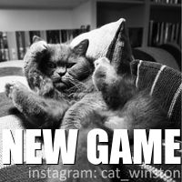
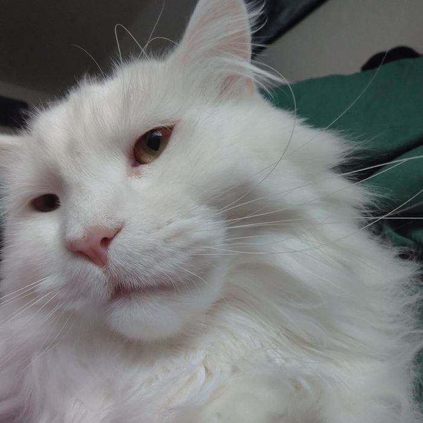

🐈 新游蹲点
发售日期
平台
直播间样本
综合热度
直播平台 × Steam
ฅ^•ﻌ•^ฅ 猫猫巡航中从斗鱼、虎牙、B站直播采样，结合 Steam 近 30 天发售信息，筛选可能刚上线且正在被主播开播的新游戏，同时把当前平台最热的游戏直播间单拎出来，方便立刻点进去验证。
这次把首页改成更像“猫咪情报台”——左边负责讲清楚这轮采样抓到了什么，右边直接挂上猫猫视觉，让页面不只是能用，而是真的有点可爱。
优先给你一个现在就能人工验证的直播间。
下方卡片按热度、发售时间和命中信号整理。


这版页面继续往“霓虹猫猫情报台”推进：把实时直播头条、候选新游和猫猫主视觉绑成同一套布局，而不是散着放的功能块。
可验证实时内容
把这张卡片当作猫猫雷达刚刚叼回来的热榜头条。
新游候选看板
按发售时间、直播热度和命中信号整理，方便快速挑出值得点开的新游戏。